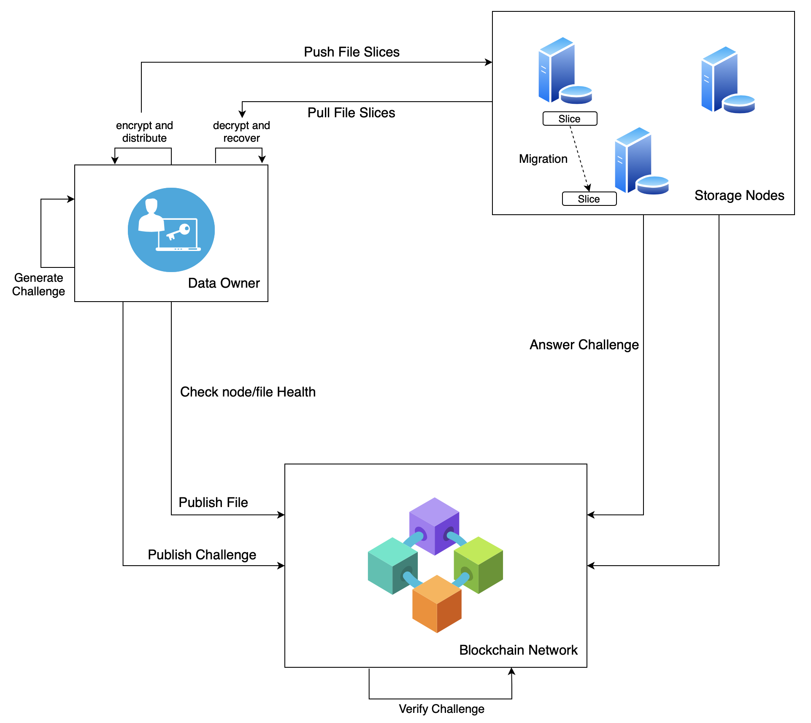

XuperDB
Contents
3. XuperDB#
PaddleDTX 的 xdb 模块实现了基于区块链的去中心化存储服务(XuperDB)，为分布式计算网络提供了数据存储支撑。
XuperDB 专注于解决海量的重要、高价值、隐私数据的安全存储问题，可以作为存储服务独立于 PaddleDTX 使用。
3.1. 背景和目标#
敏感数据存储、使用和监管方面存在如下问题：
敏感数据需要分散存储，防止泄露，当单IDC被入侵，攻击者也无法恢复原始数据；
敏感数据常用来做某些特定的分析和计算，在使用时不能泄露原始数据，支持数据可用不可见；
敏感数据使用需要得到严格的授权或监管，以备后续审计。
因此，亟需一个去中心化存储系统解决敏感数据的隐私保护、安全使用和监管审计问题。
3.2. 特点和优势#
XuperDB 具备高安全、高可用、可审计的特点：
高安全：数据加密分片存储，有权限的用户才能恢复原始数据，且可以抵御存储节点串谋和单副本攻击；
高可用：通过副本保持证明机制保证数据被安全存储，通过健康监控和文件迁移机制保证文件随时可恢复，且可以抵御单节点故障；
可审计：数据和存储节点详情记录到区块链上，保证数据完整性，支持审计功能。
3.3. 架构设计#
XuperDB 系统架构如下图所示：
XuperDB 网络由三类节点构成：
数据持有节点(DataOwner Node)：数据的归属方，有存储需求，将自己的隐私数据进行加密、切分、副本制作后分发到存储节点；
存储节点(Storage Node)：有丰富的闲置的存储资源，可以提供存储服务，通过应答数据持有节点的挑战证明自己持有数据分片；
区块链节点(Blockchain Node)：构成区块链网络，支撑整个存储网络的去中心化治理，数据持有节点和存储节点在副本保持证明、健康状态监控过程中，通过区块链网络实现信息交换。
3.4. 功能介绍#
XuperDB 系统目前主要具备文件上传下载、链上存证、副本保持证明、系统健康状态监控和文件迁移、资源访问控制等功能。我们将持续完善和新增更多功能。
3.4.1. 1 文件多副本分片存储#
为保证数据的安全高可用，一个原始文件在系统中常采用多副本存储，用户可根据文件的安全级别为其设置副本数量。
文件经过持有方加密、切分和二次加密等操作，分散并乱序分发给不同存储节点，且同一文件分片在不同存储节点中的存储内容是不同的，以此抵御单副本攻击，防止节点串谋。
3.4.2. 2 文件详情上链#
为便于网络监管和审计、保证数据完整性，文件成功上传后，需要将文件详情记录到区块链中，主要包括文件名称、文件ID、文件所有者身份、文件结构信息密文(切片顺序和哈希)、每个切片所在的存储节点、文件发布时间和过期时间等。
3.4.3. 3 文件原文恢复#
系统支持数据持有方从多个存储节点恢复原始数据，主要步骤包括：从链上获取文件结构加密信息、解密结构信息得到文件对应的切片顺序和所在存储节点列表、分别从相应存储节点拉取切片、按顺序组装切片获得原始数据。
3.4.4. 4 副本保持证明#
系统采用了副本保持证明挑战和应答机制，保证文件切片被安全存储。目前支持两种副本保持证明协议：基于梅克尔树的协议和基于双线性对映射的协议。前者空间复杂度高、计算复杂度低，后者空间复杂度低、计算复杂度高。
3.4.5. 5 健康状态监控#
系统支持存储节点和文件的健康状态监控：
存储节点健康状态根据节点的活跃度和副本保持证明应答成功比例来衡量，文件分发时会优先选择健康的存储节点；
文件健康状态根据每个切片的健康状态来衡量，每个切片的健康状态由其所在的存储节点健康状态决定。
3.4.6. 6 文件迁移#
为保证文件的安全和高可用，数据持有方会定期检查己方文件的健康状态，并将非健康的文件切片从不健康的存储节点迁移到健康节点，保证每个文件都处于健康且可随时恢复的状态。
3.4.7. 7 资源访问控制#
系统设计了一套统一的数据访问授权方案，将数据使用需求方与持有方解偶。各需求方向数据持有节点发起使用授权申请，持有节点可选择通过或拒绝，授权通过的需求方可直接从存储节点获取数据并解密恢复。整个授权流程基于智能合约，最小化授权粒度，保证在数据持有方安全可信授权的基础上，各需求方便捷的使用数据。
3.5. 如何使用#
XuperDB 的使用方法详见 接口使用部分 。